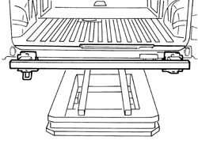
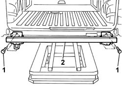
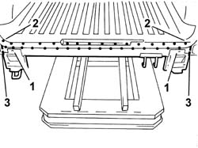
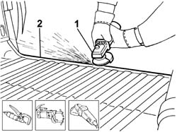
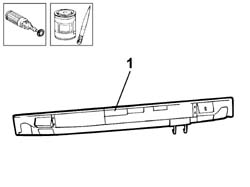
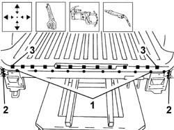

7210B70 R.R. REAR TRIM (structural element)
- Path
- Procedures > 72 PANELS AND FRAMES > 7210 REMOVING-REFITTING > 7210B structure elements-central and rear part > 7210B70 R.R. REAR TRIM (structural element)
- Kind
- repair procedure (removal / refitting; the operation number is the code)
- Applies to
- all engines; all production periods
- Interactive page
- https://sloeber94.github.io/elrnDB-fDbl/en/#/2585259
Applies to: all engines; all production periods
 Removing
Removing
 Refitting
RefittingCheck if any of the connected parts are deformed by checking body alignment dimensions. Use appropriate measurement tools (reference rigs, templates or gauges).
Straighten the body if necessary.

Applies to: all engines; all production periods
1. Open both rear door flaps and undo the rear reinforcement beam retaining bolts.
2. Remove the rear reinforcement beam.

Applies to: all engines; all production periods
1. Reduce the spot welds on the outer edge of the trim using a chamfering machine.
2. Reduce the spot welds on the inner part of the trim using a drill.
3. Using a pneumatic saw, cut the sides of the beam following the cutting lines shown in the diagram.

Applies to: all engines; all production periods
Straighten the edges of the panel.
Remove the cut panel edges sideways.
1. Use a grinding wheel to remove the weld spot residues.
2. Apply electro-galvanizing paint to the parts which have been ground.

Applies to: all engines; all production periods
Refitting
RemovingStraighten the edges of the panel and grind them using a disc grinder.
Straighten the edges of the panel.
Use a grinding wheel to remove cutting residues.
Use a rotary brush to remove the corrosion-proofing around the edge of the parts.
1. Apply electro-galvanizing paint to the edges in contact with the vehicle.

Applies to: all engines; all production periods
Correctly position the replacement part on the bodyshell and secure it using self-locking clamps.
Check it is properly aligned.
1. Use a spot welder along the outer edge of the rear trim shown in the figure.
2. Seam weld in the side areas shown in the figure.
3. Fill weld along the area of contact with the floor trim shown in the figure.

Applies to: all engines; all production periods
Check that the welded parts are correctly positioned.
Level the spot welds using a disc grinder.
Use a rotary brush to clean the inner parts.
Apply electro-galvanizing paint to the parts which have been ground.
Refit the rear reinforcement beam and secure by tightening the retaining bolts